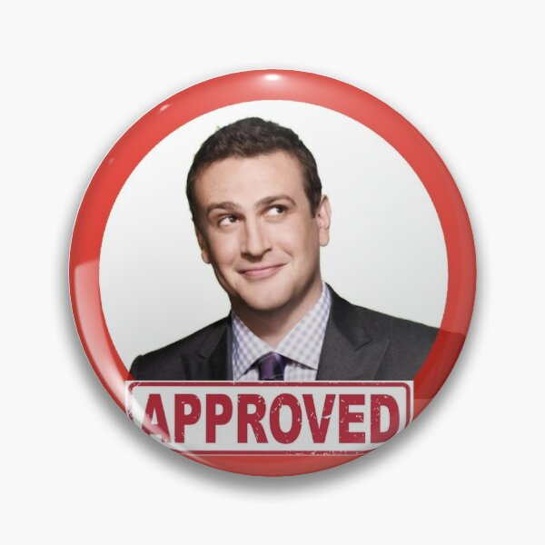

Nick Toledo
Sobre Mi
Bienvenidos
Experiencia
- NTTDATA (2021 - 2024): Desarrollo y mantenimiento de software legado, ZK Framework.
- Bruno Fritsch (2019 - 2021): Integraciones REST, documentación Swagger, autoatención.
- HIMCE LTDA (2018 - 2019): Laravel 5.x, redes y mantenimiento.
Habilidades
- Lenguajes: Java, PHP, JavaScript, SQL, C#
- Frameworks: Laravel, Vue.js, ZK Framework, angular 16++
- Infraestructura: AWS, Azure, Azure DevOps, servidores
- Control de Versiones: Git
- Modalidad de Trabajo: Scrum
Valores Laborales
- Trabajo en equipo: Colaboración efectiva con equipos multidisciplinarios para alcanzar objetivos comunes.
- Compromiso: Dedicación total a cada proyecto y responsabilidad en el cumplimiento de plazos.
- Adaptabilidad: Capacidad para ajustarse a nuevas tecnologías y cambios en el entorno laboral.
- Resolución de problemas: Enfoque práctico para resolver desafíos y encontrar soluciones eficaces.
